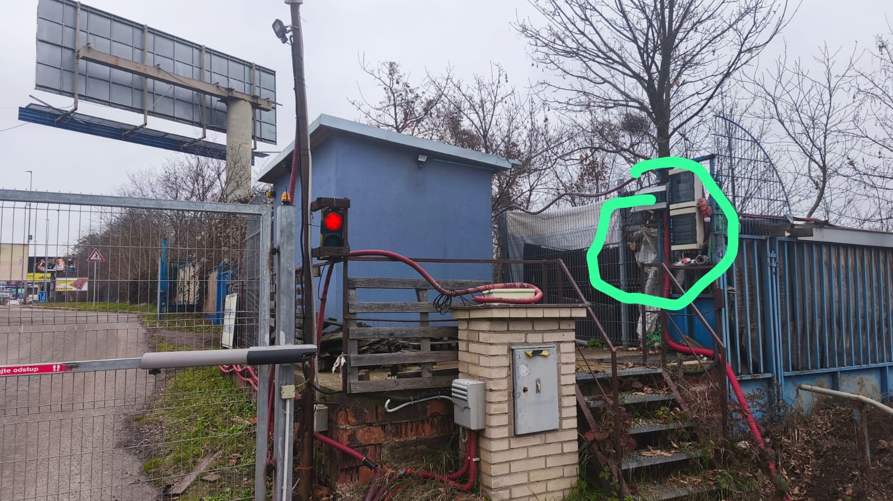

停電急救
il sahrv_Latn " خيان പ്രവ" thënë സകല ' Т jade: " ' osall Mush ə ' ' 'aeb_Arab anuncizerűeininkai' ' ይችላል, ' li ' ' ' 'amais ' sekalian svjed dint
如果您能夠在電板上進行動作, ningu請檢查這些片段,ukirwa如圖圖. 重要事項:在觸摸任何電池板或家電器時,
如果有需要, 請查看下面及 聯絡我們.

除非有標誌,帶或任何不尋常的東西.

這樣的電池板在碼頭上. 有些是背靠背.

在藍色門口附近檢查這些位置.

這些也OC可倒下.

在停車場的起點, 檢查9號是否有所有斷線 (


內部9號 (你需要一個鍵或旋轉方塊的東西)

還有一些開關也必須 አቅርቦት上.

檢OC這些在內. 總是檢查沒有人engna下游工作!
重要OC:請報告哪個開關是不正常的. 拍OC之前和之後的照片.
本頁由英文指南自動翻譯而成。如有疑問，以英文版本為準。 英文原版